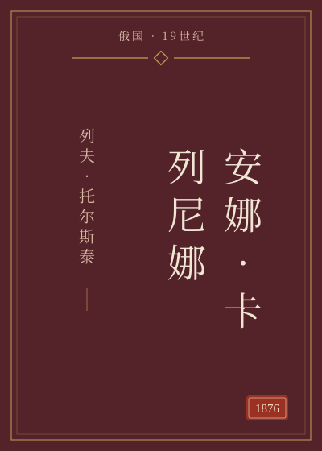

安娜·卡列尼娜
一、基本信息
| 作者 | 托尔斯泰 |
|---|---|
| 成书/出版 | 1875—1877年连载发表（Britannica） Anna Karenina (novel by Tolstoy) — Encyclopaedia Britannica（百科全书） |
| 国别/地区 | 俄国 |
| 时代 | 近代 · 19世纪 |
| 体裁 | 长篇小说 |
| 语言 | 俄语 |

《安娜·卡列尼娜》双线结构图（人物关系图）
二、创作背景
Britannica（B201）：Published in installments between 1875 and 1877——被认为 considered one of the pinnacles of world literature（世界文学的巅峰之一——Britannica）。
双线结构：安娜—渥伦斯基情事与列文—吉提婚事并行（Britannica：the parallel story……is thought to reflect Tolstoy's own marital experience）。
三、内容脉络
The narrative centres on the adulterous affair between Anna, wife of Aleksey Karenin, and Count Vronsky, a young bachelor（Britannica：叙事围绕卡列宁之妻安娜与青年伯爵渥伦斯基的婚外情展开）。
列文线：庄园改革、婚姻与信仰求索——一般认为带托尔斯泰自传色彩（Britannica）。
结局：安娜在火车站 impulsively throws herself in front of the incoming train（冲向驶来的列车——Britannica）；列文线以信仰的顿悟收束（Britannica）。
四、主要人物表
| 人物 | 身份 | 说明 |
|---|---|---|
| 安娜·卡列尼娜 | 贵妇 | 追求爱情与真实 |
| 卡列宁 | 丈夫 | 官僚式体面（Britannica 语境） |
| 渥伦斯基 | 伯爵 | 年轻军官 |
| 列文 | 地主 | 托尔斯泰的代言人（通说） |
| 吉提 | 公爵小姐 | 列文之妻 |
五、主题与艺术特点
- 社会虚伪与个人真实：安娜受惩罚不是因为破坏道德本身，而是无视上流社会的双重规则（Britannica 意译：Anna is punished not for breaking the moral code itself but for ignoring the proprieties demanded by hypocritical high society）。
- 庄园改革与信仰求索（列文线，通说）。
- 题词：Vengeance is mine; I will repay（伸冤在我，我必报应——《罗马书》，Britannica 确认为题词）。
六、影响与评论
- Britannica：considered one of the pinnacles of world literature（世界文学巅峰之一）。
Anna Karenina (novel by Tolstoy) — Encyclopaedia Britannica（百科全书） - Britannica（B043，Tolstoy 条）：托尔斯泰两大名作为 War and Peace 与 Anna Karenina（作者级定位）。
Leo Tolstoy — Encyclopaedia Britannica (by Gary Saul Morson)（百科全书）
七、阅读建议
难点
- 双线并行结构——两线交替阅读法。
- 俄国人名（名字+父称+姓）——先记简称。
- 农事改革讨论段（列文线）。
- 草婴译本（上海译文出版社，通说待核）。
- 周扬/谢素台译本（人民文学出版社，通说待核）。
- 马特尔（Constance Garnett）英译本（公有领域）。
先安娜线通读 → 回看列文线 → 再并读两线收束章。
八、待核实
- 初版单行本1878年（圣彼得堡说）待核。
- 各中文译本出版信息待核。
- 题词俄文原文与出处（罗马书12:19）核对。
本页主要来源
- Anna Karenina (novel by Tolstoy) — Encyclopaedia Britannica（百科全书）
- Leo Tolstoy — Encyclopaedia Britannica (by Gary Saul Morson)（百科全书）
托尔斯泰的其他收录作品：战争与和平